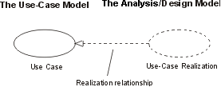

| Guideline: Use-Case Realization |
 |
|
| Related Elements |
|---|
IntroductionA use-case realization represents how a use case will be implemented in terms of collaborating objects. This artifact can take various forms. It may include, for example, a textual description (a document), class diagrams of participating classes and subsystems, and interaction diagrams (communication and sequence diagrams) that illustrate the flow of interactions between class and subsystem instances. In a model, a use-case realization is represented as a UML collaboration that groups the diagrams and other information (such as textual descriptions) that form part of the use-case realization. The reason for separating the use-case realization from its use case is that doing so allows the use cases to be managed separately from their realizations. This is particularly important for larger projects, or families of systems where the same use cases may be designed differently in different products within the product family. Consider the case of a family of telephone switches which have many use cases in common, but which design and implement them differently according to product positioning, performance and price. For larger projects, separating the use case and its realization allows changes to the design of the use case without affecting the baselined use case itself. For each use case in the use-case model, there is a use-case realization in the analysis/design model with a realization relationship to the use case. In the UML this is shown as a dashed arrow, with an arrowhead like a generalization relationship, indicating that a realization is a kind of inheritance, as well as a dependency (i.e. it could have been shown as a dependency stereotyped with <<realize>>).
 A use-case realization in the analysis/design model can be traced to a use case in the use-case model. Class Diagrams Owned by a Use-Case RealizationFor each use-case realization there may be one or more class diagrams depicting its participating classes. The figure below shows a class diagram for the realization of the Receive Deposit Item use case. A class and its objects often participate in several use-case realizations. It is important during design to coordinate all the requirements on a class and its objects that different use-case realizations may have.
The use case Receive Deposit Item and its class diagram. Communication and Sequence Diagrams Owned by a Use-Case RealizationFor each use-case realization there is one or more interaction diagrams depicting its participating objects and their interactions. There are two types of interaction diagrams: Sequence diagrams and communication diagrams. They express similar information, but show it in different ways. Sequence diagrams show the explicit sequence of messages and are better when it is important to visualize the time ordering of messages, whereas communication diagrams show the communication links between objects and are better for understanding all of the effects on a given object and for algorithm design. See Guideline: Sequence Diagram and Guideline: Communication Diagram below for more information. |

© Copyright IBM Corp. 1987, 2006. All Rights Reserved. |